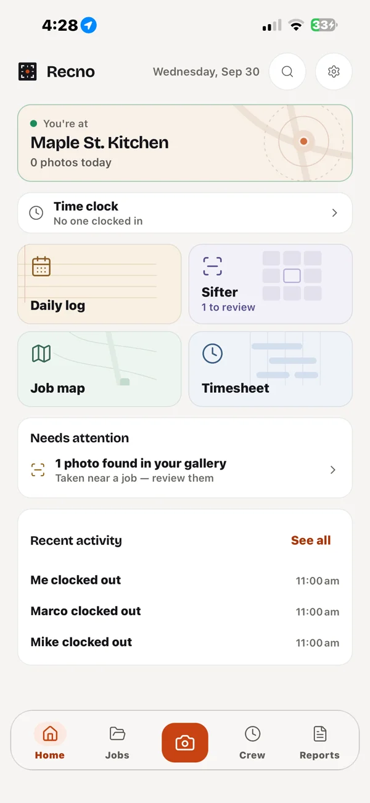
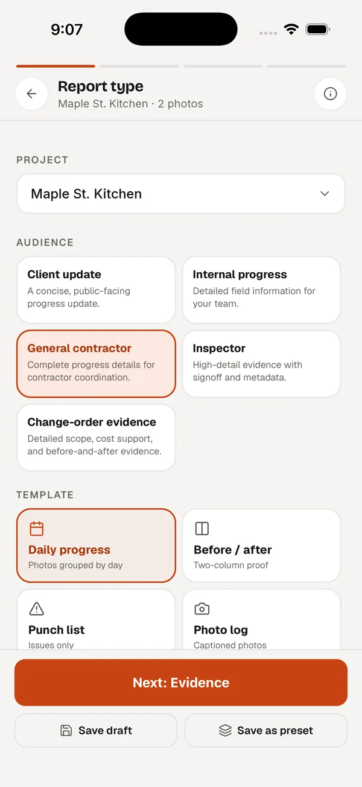
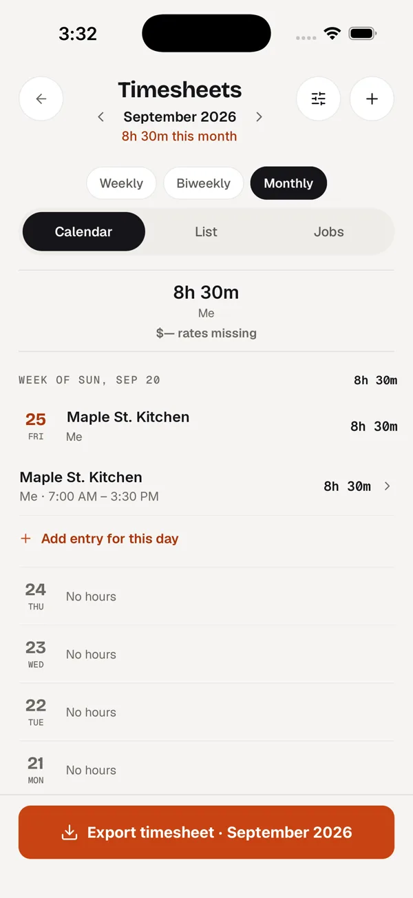

For contractors who take the photos themselves
Every photo, filed to the right job.
You shoot, Recno files. It finds the work photos already buried in your camera roll and turns the day into a report you can send before you leave the truck.
Free to download for iPhone. Recno Pro is $14.99 a month or $99.99 a year, cancel any time in your Apple Account.

HomeKnows which job you are standing on
0
Accounts, logins or servers to set up
3
Report formats: PDF, HTML and CSV
14
Days free with the annual plan, for eligible accounts
01 / The photos you already took
Sort jobsite photos from your camera roll by job.
Your camera roll is the jobsite record. It just isn't sorted. Sifter matches the photos taken near a saved job and stacks them for you to approve. Nothing is filed without you saying yes.
0 Press run scan
A demonstration of how matching works. Your photos never leave the phone.
-
Matched by where you stood
Photos taken inside a saved job's radius get pulled out of the noise. Lunch, receipts and the dog stay behind.
-
You approve every match
Matches sit in a review queue. Approve them into the job, or discard them and Recno stops offering them.
-
It tells you when a stack is ready
Recno lets you know when new matches are waiting. Turn the alert off in Settings and it stays quiet.
-
Optional cleanup
Filing copies the photo into the job. You can switch it to move instead, clearing the original from your gallery — that one is off unless you turn it on.
02 / Shooting on site
Stamp jobsite photos with date, GPS and weather.
Open the camera and Recno already knows which job you are standing on. Every shot lands in that job with the details burned in, so a photo still means something six months later.
Tap a field to see what the stamp carries. These are the same switches you get in the app.
-
The right job, preselected
Recno matches your position to a saved job and files the shot there. Standing somewhere new? Pick the job yourself.
-
Draw on it while it is fresh
Circle the crack, arrow the leak, drop a text label. Markups carry through into the reports you send.
-
Notes and voice memos
Add a note, or record a voice memo when your hands are dirty and typing isn't happening.
-
Categories, favorites, video
Tag a shot as demo, rough-in, damage or done. Star the ones that matter. Video works the same way.
-
The customer’s OK, on the spot
Long-press the shutter and the customer signs off an extra or a selection on your phone. The signed record, with time and place, prints in every report. If they won’t sign, that is recorded too.
03 / What you send
Send a daily construction report as a PDF.
Three steps: choose who it is for, check the evidence, preview. Send the PDF to the homeowner, the CSV to your bookkeeper, and keep the history so you can re-send any of it later.

Build reportStep one: who it is for, and how it is laid out
-
Try a free photo report now
Open the browser builder to make a PDF from your photos. It needs no account or upload and is separate from Recno's Pro in-app export.
-
Five audiences
Client update, internal progress, general contractor, inspector, or change-order evidence. Each one puts in what that reader needs.
-
Four templates
Daily progress grouped by day, before and after side by side, a punch list of open issues, or a captioned photo log.
-
Your company on the page
Add your logo and company details once. Every report goes out looking like it came from your office.
-
Report history
Reports you build are saved, so you can re-send the one from three weeks ago without rebuilding it.
-
An end-of-day nudge
Optional reminder that opens the day's report with the busiest job already selected, so it goes out the same day.
Capture, filing, the daily log and the time clock are free. Report export, Sifter and timesheet export come with Pro.
04 / Hours and the day
A crew time clock with timesheets by job.
Clock the crew in at the job, watch the day build itself as a timeline, and pull the hours out as a costed sheet when it is time to invoice.

TimesheetWeekly, biweekly or monthly, by person and job
-
Crew time clock
Clock people in and out against the job. Recno can use the jobsite radius so the right job is already selected.
-
Timesheets and labor cost
Hours roll up weekly, biweekly or monthly, by person and by job. Overtime, workweek, pay period and break rules live in the timesheet. Export a costed sheet with Pro when you bill or run payroll.
-
Arrival and as-left photos
Clocking in offers four quick shots of the entry, floor, work area and street before you touch anything. Clocking out asks for one “as left” photo.
-
The daily log
Photos, hours and site notes laid out in the order they happened. Scroll a day and see exactly what went on.
-
Clock alerts
A heads-up if the crew is still clocked in long after the day should have ended, so hours don't run all night.
05 / The rest of it
More jobsite tools for small contractors.
Every job, mapped
Save each job with its address and radius. See them all on a map, sort by what is active, and archive the finished ones.
Photos by day
A job opens on its photos, grouped by day with the time you were on site, or as a grid or by tag. Search notes, jobs and reports when you need the one shot.
Before and after
Put the demo shot next to the finished shot side by side. The comparison sells the work better than a paragraph.
Punch list
Track what is still open on a job, tick items off as they are done, and drop the list into a report.
Automatic backup
On by default. Backups go to your own private iCloud container, and Recno keeps a copy on the phone when iCloud is not reachable. Switch it off any time.
Built for no bars
Basements, new builds, rural lots. Capture, filing and reports all work with no connection, because the records live on the phone.
06 / Where your work lives
Where does Recno store my jobsite photos?
On your phone, not on our server. Recno has no accounts and no sync service, because there is nothing on our side to sync to. Here is what leaves the device, and when.
Your records
Photos, notes, hours and reports are stored on the device. We do not receive them and cannot read them.
Backups
With automatic backup on, archives go to Recno's own private iCloud container — between you and Apple, not through us.
Weather stamps
On out of the box: coordinates go to Open-Meteo to fetch the conditions for a shot. Switch weather off in Settings and nothing is sent.
Addresses and places
Searching a job address sends what you type, and roughly where you are, to OpenStreetMap. Naming a job from your location asks Apple for the street address.
Subscriptions
The subscription SDK checks your entitlement with RevenueCat when the app starts. It never receives jobsite content.
Counting installs
An anonymous activation signal you can opt into, off unless you turn it on. No profile, no tracking, no ads anywhere in the app.
Full detail in the privacy policy and delete data pages.
07 / What it costs
How much does Recno cost?
Free to record. Pro to sift and send. The annual plan works out to $8.33 a month — one photo that settles a disputed change order pays for years of it.
Free
Capture and file photos, the daily log, crew time clock and timesheet totals, punch lists, the customerpunch lists, customer sign-off and automatic backup.
rsquo;s OK from the camera, and automatic backup.Recno Pro
$14.99 a month or $99.99 a year. Adds Sifter, report export (PDF, HTML and CSV), timesheet export and Optimize Storage for archived jobs.
Free trial
A 14-day free trial comes with the annual plan, when Apple marks your account eligible for it.
Cancel any time in your Apple Account settings. Cancel before the trial ends and you are not charged. Prices are in USD; the App Store shows your local price.
08 / Before you download
Questions contractors ask first.
Do I or my crew need an account?
No. There is no sign-up and no login. You clock the crew in and out from your own phone, so they don't need the app installed.
Does it work without cell signal?
Yes. Capture, filing, the daily log and reports all work offline because the records live on the phone. Weather stamps and address search are the parts that need a connection.
What happens to my photos if I lose or replace my phone?
Automatic backup is on by default and saves to Recno's private iCloud container under your Apple Account. You can also export a backup file yourself before switching phones. See Support for the details.
Is there an Android version?
Not yet. Recno is iPhone only.
What do I get free, and can I cancel Pro?
Capture, filing, the daily log, the crew time clock, punch lists and backup are free. Pro adds Sifter, report export and timesheet export. It is an App Store subscription, so you cancel it in your Apple Account settings like any other.
On the App Store now
Record your work.
Install it, save your first job, and the next photo you take files itself.
Questions first? Email gsl456789@gmail.com.